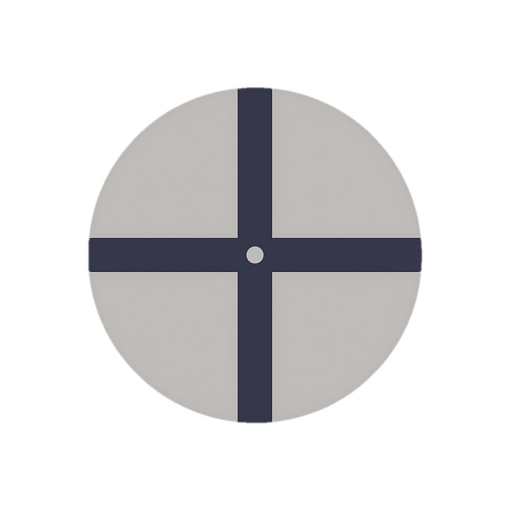

<!DOCTYPE html>
<html>
<head>
  <meta charset="utf-8">
  <!-- jsPsych core and plugins -->
  <script src="../dist/jspsych.js"></script>
  <script src="../dist/plugin-html-button-response.js"></script>
  <script src="../dist/plugin-html-keyboard-response.js"></script>
  <script src="../dist/plugin-webgazer-init-camera.js"></script>
  <script src="../dist/plugin-webgazer-calibrate.js"></script>
  <script src="../dist/plugin-virtual-chinrest.js"></script>
  <script src="js/webgazer/webgazer.js"></script>
  <script src="../dist/extension-webgazer.js"></script>
  <link rel="stylesheet" href="../dist/jspsych.css" />
  <style>
    .jspsych-content { max-width: 100%; position: relative; }
    table { margin: auto; border-collapse: collapse; }
    th, td { padding: 6px 10px; border: 1px solid #888; }
    .gaze-dot {
      position: absolute;
      width: 12px;
      height: 12px;
      background-color: red;
      border-radius: 50%;
      pointer-events: none;
      z-index: 999;
    }
  </style>
</head>
<body></body>
<script>
  // ==== PARAMETERS ====
  const calibrationPoints         = 5;
  const calibrationReps           = 2;
  const fixationRadiusDeg         = 3;
  const validationLoopCount       = 30;
  const consecutiveFixationTimeMs = 500;
  const fixationTimeoutMs         = 10000;
  const samplingIntervalMs        = 50;
  const consecutiveThresh         = Math.ceil(consecutiveFixationTimeMs / samplingIntervalMs);

  // ==== GLOBALS ====
  let pixelsPerDegree = null;
  let viewingDistance = null;  // in mm
  const accuracyResults = [];

  function getCalibrationPoints(n) {
    if (n === 5)  return [[25,25],[75,25],[50,50],[25,75],[75,75]];
    if (n === 9)  return [[20,20],[50,20],[80,20],[20,50],[50,50],[80,50],[20,80],[50,80],[80,80]];
    if (n === 13) return [[10,10],[30,10],[50,10],[70,10],[90,10],
                          [20,50],[40,50],[60,50],[80,50],
                          [10,90],[30,90],[50,90],[70,90]];
    return [[50,50]];
  }

  const jsPsych = initJsPsych({
    extensions: [{ type: jsPsychExtensionWebgazer, params: { targets: [] } }]
  });
  const timeline = [];

  // 1. Intro + Virtual Chinrest
  timeline.push({
    type: jsPsychHtmlButtonResponse,
    stimulus: `<p>This experiment uses your camera for eye tracking.</p>
               <p>You will be prompted to allow camera access next.</p>`,
    choices: ['Begin'],
    post_trial_gap: 500
  });
  timeline.push({
    type: jsPsychVirtualChinrest,
    blindspot_reps: 2,
    resize_prompt: true,
    item_path: '../../stimuli/credit_card.png',
    on_finish: data => {
      pixelsPerDegree = data.px2deg || 50;
      viewingDistance = data.view_dist_mm ?? 'NA';
    }
  });

  // 2. Calibration
  timeline.push({ type: jsPsychWebgazerInitCamera });
  timeline.push({
    type: jsPsychHtmlButtonResponse,
    stimulus: `<p>Calibration: ${calibrationPoints} points × ${calibrationReps} reps</p>
               <p>Click to start calibration.</p>`,
    choices: ['Start calibration']
  });
  timeline.push({
    type: jsPsychWebgazerCalibrate,
    calibration_points: getCalibrationPoints(calibrationPoints),
    repetitions_per_point: calibrationReps,
    randomize_calibration_order: true
  });

  // 3. Pre-Trial Accuracy Screen (with gaze-dot)
  timeline.push({
    type: jsPsychHtmlButtonResponse,
    stimulus: () => {
      const viewDistCm = viewingDistance!=='NA'
        ? (viewingDistance/10).toFixed(1)
        : 'NA';
      const roiPx    = pixelsPerDegree * fixationRadiusDeg;
      const radiusCm = viewingDistance!=='NA'
        ? (Math.tan(fixationRadiusDeg * Math.PI/180) * viewingDistance / 10).toFixed(2)
        : 'NA';
      return `
        <div id="accuracy-container" style="position:relative;">
          <h3>Fixation ROI & Display</h3>
          <ul>
            <li>Viewing distance: ${viewDistCm} cm</li>
            <li>Fixation radius: ${fixationRadiusDeg}°</li>
            <li>ROI radius: ${roiPx.toFixed(1)} px</li>
            <li>Radius size: ${radiusCm} cm</li>
          </ul>
          <div style="display:flex;justify-content:center;align-items:center;height:200px;">
            <div style="
              width:${(roiPx*2).toFixed(1)}px;
              height:${(roiPx*2).toFixed(1)}px;
              border:2px solid #000;
              border-radius:50%;
            "></div>
          </div>
          <p>Click to begin the fixation trials.</p>
        </div>`;
    },
    choices: ['Begin Trials'],
    on_load: () => {
      webgazer.resume();
      const dot = document.createElement('div');
      dot.className = 'gaze-dot';
      document.getElementById('accuracy-container').appendChild(dot);
      const interval = setInterval(() => {
        webgazer.getCurrentPrediction().then(g => {
          if (g?.x!=null && g?.y!=null) {
            dot.style.left = `${g.x-6}px`;
            dot.style.top  = `${g.y-6}px`;
            jsPsych.data.write({
              phase:          'accuracy-screen',
              gaze_x:         g.x,
              gaze_y:         g.y,
              gaze_timestamp: performance.now()
            });
          }
        });
      }, samplingIntervalMs);
      dot._interval = interval;
    },
    on_finish: () => {
      const dot = document.querySelector('.gaze-dot');
      if (dot) {
        clearInterval(dot._interval);
        dot.remove();
      }
      webgazer.pause();
    }
  });

  // 4. Fixation trials + rest screen
  for (let i = 1; i <= validationLoopCount; i++) {
    timeline.push({
      timeline: [

        // 1. Buffer screen before each trial
        {
          type: jsPsychHtmlButtonResponse,
          stimulus: `<p>Trial ${i} of ${validationLoopCount}</p>
                    <p>Click “Begin Next Trial” to continue.</p>`,
          choices: ['Begin Next Trial'],
          on_start:  () => webgazer.pause(),
          on_finish: () => webgazer.resume()
        },

        // 2. Fixation trial
        {
          type: jsPsychHtmlKeyboardResponse,
          stimulus: () => {
            const sizePx = 2 * pixelsPerDegree * fixationRadiusDeg;
            return `
              <div id="fixation-container" style="position:relative; width:100vw; height:100vh;">
                
              </div>`;
          },
          choices: 'NO_KEYS',
          trial_duration: fixationTimeoutMs,
          data: { trial_id: 'fixation-adaptive', trial_number: i },
          on_load: () => {
            const buffer = [];
            const cx = window.innerWidth / 2;
            const cy = window.innerHeight / 2;
            const roiPx = pixelsPerDegree * fixationRadiusDeg;
            const start = performance.now();
            let consec = 0, ended = false;

            const interval = setInterval(async () => {
              const now = performance.now();
              const g = await webgazer.getCurrentPrediction();
              if (g?.x != null && g?.y != null) {
                buffer.push({ x: g.x, y: g.y, t: now });

                const windowData = buffer.filter(p => now - p.t <= consecutiveFixationTimeMs);
                const insideCount = windowData.filter(p => {
                  const dx = p.x - cx, dy = p.y - cy;
                  return Math.hypot(dx, dy) <= roiPx;
                }).length;
                const accuracy = windowData.length
                  ? (insideCount / windowData.length * 100).toFixed(1)
                  : '0.0';
                console.log(`Rolling 500 ms accuracy: ${accuracy}%`);
              }
            }, samplingIntervalMs);

            function finishTrial(success, ttf, acc) {
              if (ended) return;
              ended = true;
              clearInterval(interval);
              webgazer.pause();
              const capped = Math.min(ttf, fixationTimeoutMs);
              accuracyResults.push({
                trial:        i,
                success:      success ? 1 : 0,
                timeToFixate: capped,
                accuracy:     acc
              });
              jsPsych.finishTrial({
                trial_number:  i,
                success,
                timeToFixate:  capped,
                accuracy:      acc,
                gazeBuffer:    buffer
              });
            }

            function tick() {
              if (ended) return;
              const now = performance.now();

              if (now - start >= fixationTimeoutMs) {
                const total = buffer.length;
                const inside = buffer.filter(p => {
                  const dx = p.x - cx, dy = p.y - cy;
                  return Math.hypot(dx, dy) <= roiPx;
                }).length;
                const acc = total ? (inside / total * 100).toFixed(1) : '0.0';
                finishTrial(false, fixationTimeoutMs, acc);
                return;
              }

              webgazer.getCurrentPrediction().then(g => {
                if (g?.x != null && g?.y != null) {
                  const t = performance.now();
                  if (Math.hypot(g.x - cx, g.y - cy) <= roiPx) {
                    consec++;
                    if (consec >= Math.ceil(consecutiveFixationTimeMs / samplingIntervalMs)) {
                      const total = buffer.length;
                      const inside = buffer.filter(p => Math.hypot(p.x - cx, p.y - cy) <= roiPx).length;
                      const acc = ((inside / total) * 100).toFixed(1);
                      finishTrial(true, Math.round(t - start), acc);
                      return;
                    }
                  } else {
                    consec = 0;
                  }
                }
                setTimeout(tick, samplingIntervalMs);
              });
            }
            tick();
          }
        },

        // 3. Buffer screen after each trial
        {
          type: jsPsychHtmlButtonResponse,
          stimulus: `<p>Trial ${i} complete. Click to continue.</p>`,
          choices: ['Continue'],
          on_start: () => webgazer.pause(),
          extensions: []
        }
      ]
    });
  }


  // 5. Final summary screen
  timeline.push({
    type: jsPsychHtmlButtonResponse,
    stimulus: () => {
      const succ = accuracyResults.filter(r => r.success === 1).length;
      const times= accuracyResults.map(r => r.timeToFixate);
      const avgT = times.length
        ? Math.round(times.reduce((a,b)=>a+b,0) / times.length)
        : 'N/A';
      const accs = accuracyResults
        .map(r => parseFloat(r.accuracy))
        .filter(v => !isNaN(v));
      const avgA = accs.length
        ? (accs.reduce((a,b)=>a+b,0) / accs.length).toFixed(1)
        : 'N/A';
      const viewDistCm = viewingDistance !== 'NA'
        ? (viewingDistance/10).toFixed(1)
        : 'NA';

      let html = `
        <h3>Fixation Performance</h3>
        <ul>
          <li>Successful fixations: ${succ}/${validationLoopCount}</li>
          <li>Average time to fixate: ${avgT} ms</li>
          <li>Average accuracy (last 500ms): ${avgA}%</li>
          <li>Viewing distance: ${viewDistCm} cm</li>
          <li>Fixation radius: ${fixationRadiusDeg}°</li>
        </ul>
        <table>
          <tr><th>Trial</th><th>Accuracy (%)</th><th>Success</th><th>Time (ms)</th></tr>`;
      accuracyResults.forEach(r => {
        html += `
          <tr>
            <td>${r.trial}</td>
            <td>${r.accuracy}</td>
            <td>${r.success}</td>
            <td>${r.timeToFixate}</td>
          </tr>`;
      });
      html += `</table><p>Click to finish.</p>`;
      return html;
    },
    choices: ['Finish & Save Data as CSV'],
    on_load: () => {
      webgazer.pause();
    },
    on_finish: () => {
      // Generate header and rows for CSV
      const headers = ['trial', 'accuracy', 'success', 'timeToFixate'];
      const rows = accuracyResults.map(r =>
        [r.trial, r.accuracy, r.success, r.timeToFixate].join(',')
      );

      // Combine into CSV string
      const csvContent = [headers.join(','), ...rows].join('\n');

      // Trigger file download
      const blob = new Blob([csvContent], { type: 'text/csv' });
      const url = URL.createObjectURL(blob);
      const a = document.createElement('a');
      const timestamp = new Date().toISOString().replace(/[:.]/g, '-');
      a.download = `fixation_summary_${timestamp}.csv`;
      a.href = url;
      a.click();
      URL.revokeObjectURL(url);
    }

    });

  jsPsych.run(timeline);
</script>
</html>
